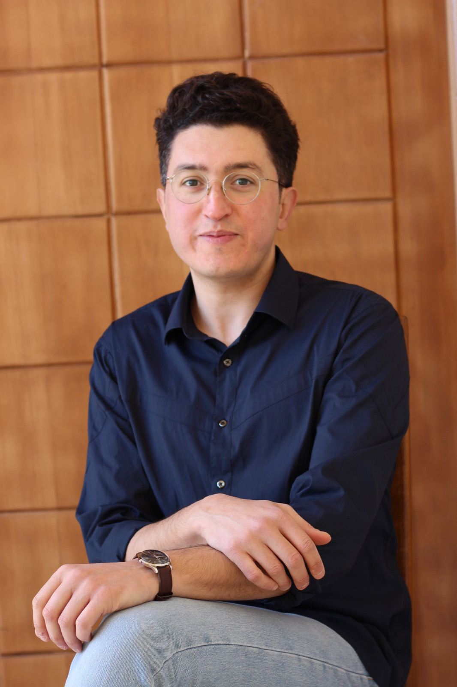

Mohamed Siala
Senior Lecturer in Computer Science
Stockholm University
- Combinatorial Optimisation
- Formal Methods
- Machine Learning
- Artificial Intelligence
I am a computer scientist interested in various areas of computation, including algorithmic analysis, combinatorial optimisation, formal methods, reasoning, and machine learning.
I currently hold a position as a Senior Lecturer at the Department of Computer and Systems Sciences (DSV), Stockholm University. I am member of the Data Science research group at DSV. Previously, I was an Associate Professor at INSA Toulouse and a member of the ROC research group at LAAS-CNRS. Before that, I was a postdoctoral researcher at the Insight Centre for Data Analytics, University College Cork, Ireland. I completed my PhD in 2015 at LAAS-CNRS.
News
Selected updates since September 2019
-
August 2026I moved to Stockholm University!
-
September 2025I am the Chair of the Doctoral Program of the CP 2026 Conference (International Conference on Principles and Practice of Constraint Programming) .
-
September 2025I had the privilege of attending the Dagstuhl Seminar "Interactions in Constraint Optimization" with amazing researchers.
-
May 2025
-
May 2025Our paper SoK: Taming the Triangle: On the Interplays between Fairness, Interpretability and Privacy in Machine Learning is accepted for publication in Computational Intelligence
-
November 2024I am the DEI (Diversity, Equity and Inclusion) co-chair of the Association for Constraint Programming
-
October 2024I am visiting João Marques Silva and Jordi Planes at Universitat de Lleida, Spain, for three months.
-
September 2024I am on a six months research sabbatical.
-
February 2024I gave a talk entitled Learning User Preferences in Interactive Constraint Programming at the AAAI 2024 Bridge on Constraint Programming and Machine Learning . The slides are available here
-
January 2024Our new preprint SoK: Taming the Triangle: On the Interplays between Fairness, Interpretability and Privacy in Machine Learning is now available here
-
December 2023Our paper Probabilistic Dataset Reconstruction from Interpretable Models is accepted to the second IEEE Conference on Secure and Trustworthy Machine Learning (SatML). A preprint is available here
-
November 2022Super proud of my Ph.D. student Julien Ferry for his amazing work on exploiting fairness for privacy in machine learning. The paper is accepted in in the very first edition of the IEEE Conference on Secure and Trustworthy Machine Learning (SatML). The paper is entitled Exploiting Fairness to Enhance Sensitive Attributes Reconstruction . A preprint is available here.
-
July 2022I spent an amazing month in Montréal visiting the team of Sébastien Gambs and other researchers in ETS, UQAM, and Polytechnique Montréal. During the visit I gave a seminar entitled Declarative Combinatorial Optimisation for Machine Learning . The slides are available here
-
July 2022Our Constraint Programming solver Mistral-2.0 won multiple awards in the XCSP Constraint Programming competition including the first place in the mini optimisation track.
-
May 2022Our paper Improving Fairness Generalization Through a Sample-Robust Optimization Method is accepted for publication in Machine Learning . A video is available here .
-
February 2022Our paper Leveraging Integer Linear Programming to Learn Optimal Fair Rule Lists is accepted for publication in CPAIOR'22 , the 19th International Conference on the Integration of Constraint Programming, Artificial Intelligence, and Operations Research.
-
December 2021Our paper Optimizing Binary Decision Diagrams with MaxSAT for classification is accepted for publication in AAAI'22 , the Thirty-Sixth AAAI Conference on Artificial Intelligence.
-
September 2021I am appointed as an academic advisor and coordinator for the AI and Big Data major at INSA Toulouse
-
July 2021Our benchmarks for learning decision trees and binary decision diagrams are used in multiple MaxSAT competitions since 2021.
-
July 2021Check out our Python library, FairCORELS, for learning fair and certifiably optimal rule lists. This work is published in our paper "FairCORELS, an Open-Source Library for Learning Fair Rule Lists" in CIKM 2021, the 30th ACM International Conference on Information and Knowledge Management!
-
September 2020Our Constraint Programming solver Mistral-2.0 won two bronze medals for the MiniZinc Challenge 2020 (free and parallel track).
-
September 2020I am a co-chair of the CPAIOR Master class 2020. The theme of the master class is "Recent Advances in Optimisation Paradigms and Solving Technology". You can watch the talks in youtube here.
-
June 2020Our paper Towards Formal Fairness in Machine Learning is accepted for publication in CP 2020, the 26th International Conference on Principles and Practice of Constraint Programming.
-
April 2020Our paper Learning Optimal Decision Trees with MaxSAT and its Integration in AdaBoost is accepted for publication in IJCAI-PRICAI 2020, the 29th International Joint Conference on Artificial Intelligence and the 17th Pacific Rim International Conference on Artificial Intelligence
-
February 2020I gave a seminar at the Department of Philosophy, UCC, Ireland entitled : "Computational Thinking and AI for Philosophers"
-
September 2019I am a Distinguished Program Committee for IJCAI 2019, the 28th International Joint Conference on Artificial Intelligence !